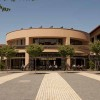

N-avem niciun pont despre tigăi vietnameze la reducere, nici nu ştim vreun concurs de “like-uri” cu premii crocante. În schimb, vă prezentăm o ofertă care nouă ne pare de nerefuzat.
Universitatea americană Stanford, cotată drept una dintre cele mai performante instituţii de învăţământ din lume, oferă cursuri online gratuite, în cadrul unui experiment ce are ca scop încurajarea noilor tehnologii educaţionale. Lecţiile sunt deschise oricui cunoaşte limba engleză şi vrea să înveţe de la cei mai prestigioşi profesori ai lumii.
Taxele obişnuite de şcolarizare la Stanford depăşesc 40.000 de dolari americani pe an de studiu.
În 2011, peste 350.000 de oameni din întreaga lume s-au înscris la unul dintre cele trei cursuri disponibile. Anul acesta, Universitatea Stanford oferă gratis lecţii la cinci materii.
Interactiv, online şi în ritmul propriu
Cursurile online sunt predate de către titularii de catedră ai universităţii californiene şi au un grad înalt de interactivitate. Participanţii urmăresc scurte clipuri, care includ teste în timp real cu rezultate imediate, acestea permiţându-le să-şi determine rapid nivelul de înţelegere a materialului şi să lucreze asupra aspectelor problematice. În acelaşi timp, studenţii se ajută unul pe altul prin intermediul unor discuţii virtuale, similare comentariilor postate pe reţelele de socializare.
În mediul virtual, cursanţii pot alege momentul când vor să urmărească filmele interactive şi pot progresa în ritmul propriu. Întrebările şi testele din materialele video interactive clarifică informaţiile predate.
Cursurile fac parte dintr-o iniţiativă a Universităţii Leland Stanford Junior de a folosi în mod creativ noile tehnologii, pentru a îmbunătăţii metodele educaţionale, atât în campus, cât şi în afara lui.
Cei care se înscriu la prelegerile gratuite nu primesc credite universitare pentru munca lor, dar, dacă absolvă cu succes un anumit curs, obţin o recunoaştere formală a reuşitei lor.
Cursuri disponibile şi înscriere
Iată cele cinci materii de anul acesta şi datele primei lecţii:
- Design-ul şi analiza algoritmilor. Cursul începe luni, 12 martie;
- Procesarea limbajului natural. Lecţiile debutează luni, 12 martie;
- Criptografie, începând tot cu luni, 12 martie;
- Teoria jocurilor. Materialele de studiu vor fi disponibile începând de mâine, 10 martie, clopoţelul virtual sună prima oară luni, 19 martie;
- Modele grafice probabilistice. Primul curs e luni, 19 martie.
Clipul de mai jos prezintă cursul de Teoria jocurilor, care va fi susţinut de profesorii Matthew Jackson şi Yoav Shoham. Dacă aţi vizionat filmul „A Beautiful Mind”, această disciplină nu vă e completă străină. E vorba despre matematica interacţiunilor raţionale sau iraţionale. Pornind de la jocuri precum şahul, poker-ul, fotbalul etc., teoria încearcă să explice şi să cuantifice fenomene mai complexe, cum ar fi, spre exemplu, evoluţia burselor sau modul în care electoratul răspunde la mesajele de campanie.
Chiar dacă nu veţi avea timpul, interesul sau răbdarea de parcurge un modul de curs integral, ACRU.ro vă invită să daţi măcar o raită pe la Stanford. Pentru că merită.


{kind=link}
{kind=link}
si MIT are cursuri online foarte misto si in multe domenii. Text, imagine si sunet.
cool…teoria jocurilor. chiar cautam un curs online. cred ca ma bag si la probabilitati, mai ales daca sunt explicate grafic matematica a fost materia mea preferata in scoala, ce naiba!
matematica a fost materia mea preferata in scoala, ce naiba! 
Comments on this entry are closed.